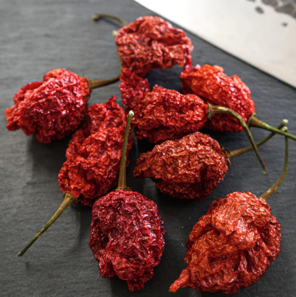

On a regular Tuesday afternoon in a Sofia park, a 10-year-old boy named only as "Little Pesho" accepted a dare from his friends to eat a full Carolina Reaper pepper. What followed has baffled scientists, parents, and three pigeons who witnessed the event.
According to eyewitnesses, approximately 4 seconds after consuming the pepper, Little Pesho went completely silent, stared at the sky, and began pointing upward with both hands. He reportedly screamed: "THE SAUCERS! THEY ARE SPINNING! THEY HAVE CHILI ON THEM!" His friends confirmed that the sky appeared completely clear at the time.

The pepper was purchased from a local market, described by the seller as "only a little spicy." Scientists at the Sofia Institute of Culinary Extremes measured it at 2.4 million Scoville units — enough, according to lead researcher Dr. Lyutibor Chushkov, to "temporarily rewire the human brain's visual cortex into a UFO detector."
Little Pesho described the saucers in detail during his 45-minute vision:
His mother, when reached for comment, said only: "I told him not to eat it. I told him." She has since banned all peppers from the household, including paprika and ketchup.
The Bulgarian Space Agency officially declined to comment. However, an anonymous source told Vestnik Chushki: "We are not saying it was aliens. But we are also not saying it wasn't."
Little Pesho has fully recovered and returned to school. He now draws only spaceships in art class and has started learning "alien language" from YouTube tutorials. His teacher describes him as "enthusiastic but concerning."